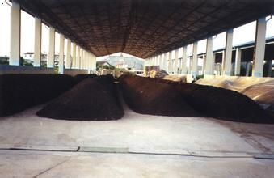

“有机肥优势与功效 有机肥优势 1 与化肥相比： 1) 生物有机肥营养元素齐全;化肥营养元素只有一种或几种。 2) 生物有机肥能够改良土壤;化肥经常使用会造成土壤板结。 3) 生物有机肥能...

“有机肥俗称农家肥，是指含有大量生物物质、动植物残体、排泄物、生物废物等物质的缓效肥料。有机肥中不仅含有植物必需的大量元素、微量元素，还含有丰富的有机养分，有机肥是...
“从农村的刀耕火种到机械化耕种，短短几十年农村发生了翻天覆地的变化，农业技术的进步固然让我们享受到了现代农业的红利，但不可避免的，给土壤带来严重的伤害，下面小编就一...

“粪便堆沤处理生产有机肥技术是通过调节畜禽粪便中的碳氮比和人工控制水分、温度、酸碱度等条件，利用微生物的发酵作用处理畜禽粪便，生产有机肥料。 在堆沤过程中，伴随着有机...

“有机肥造粒机，采用微生物发酵技术,将畜禽粪便、城市垃圾等制成脱臭无菌、高肥效、不烧根苗的有机肥,用于粮田、瓜果、蔬菜及花卉,适用于新建厂或原有复合肥厂的技术改造。 生物...

“复合肥生产工艺流程设备特点： 包膜材料熔融装置：适用于热敏性物料的连续性快速熔融，由电脑控制可连续稳定的给喷涂系统提供精确的包膜材料流体。 涂布包膜转鼓：由电脑控制...